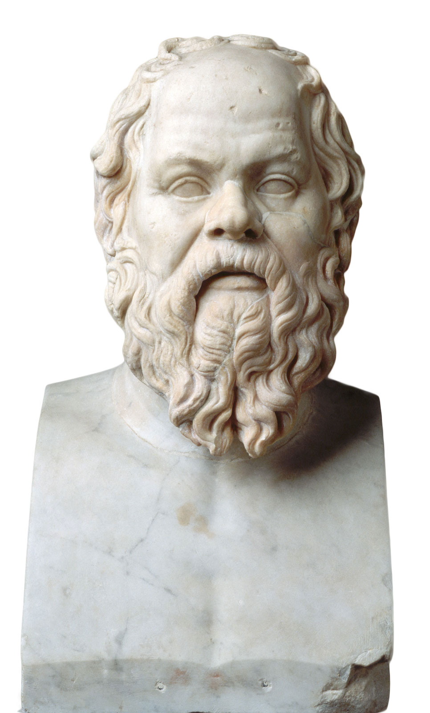

All men are mortal.
Socrates is a man.
Therefore,
Socrates is mortal.

∀x P(x) ⇒ Q(x)
P(y)
_____________
Q(y)
modus ponens
The basic information unit in the Semantic Web
is a link from one resource to another.
Those two resources each
are identified by an HTTP URL.
To simplify their display,
we abbreviate URLs using prefixes.
In contrast to typical Web links, these links
are typed with a URL we can dereference.
This Linked Data fact can be
represented as a triple.
We define the triple by its components:
- subject – dbr:Tim_Berners-Lee
- predicate – foaf:knows
- object – dbr:Ted_Nelson
Since a link type is a URL,
it is also a resource we can describe.
In addition to resources,
link targets can also be literal values.
By linking resources together this way,
we create a Semantic Web of Linked Data.
Linked Data triples can be serialized
using the Notation3 syntax.
PREFIX dbr: <http://dbpedia.org/resource/>
PREFIX foaf: <http://xmlns.com/foaf/0.1/>
PREFIX rdf: <http://www.w3.org/1999/02/22-rdf-syntax-ns#>
dbr:Tim_Berners-Lee foaf:knows dbr:Ted_Nelson.
dbr:Tim_Berners-Lee foaf:givenName "Tim".
foaf:knows rdf:type rdf:Property.
Semantic Web reasoning is an agent’s
ability to verify and discover facts.
-
Linked Data provides a body of knowledge.
-
Query engines let clients select specific facts.
-
Reasoning allows clients to combine knowledge
from different sources and draw conclusions.
- Clients infer facts based on other facts.
Some reasoners are tailored to a task,
others can/need to be extended.
-
reasoner with built-in knowledge
- can tackle a problem without configuration
- can have internal optimizations for certain cases
-
reasoner without built-in knowledge
- can be extended with new inference steps
- can explain in-depth why a step was taken
Rules in Notation3 are also expressed as triples
through if–then implications.
{ … } log:implies { … }.
{ … } => { … }.
{ ppl:Tim foaf:knows ppl:Ted. }
=>
{ ppl:Ted foaf:knows ppl:Tim. }.
The EYE reasoner can produce inferences
by executing Notation3 rules.
Through the use of variables,
we can make rules more generic.
{ ppl:Tim foaf:knows ppl:Ted. }
=>
{ ppl:Ted foaf:knows ppl:Tim. }.
{ ?personA foaf:knows ?personB. }
=>
{ ?personB foaf:knows ?personA. }.
EYE will instantiate variables at runtime
in order to execute the rules.
Recall that a link type
is also a resource we can describe.
An ontology is a collection of descriptions
of related properties and classes.
-
The Semantic Web provides a couple of standardized core ontologies.
- RDF for triple components
- RDFS for simple property and class definitions
- OWL for advanced property and class definitions
- …
-
Anybody can define their own ontologies and reuse others.
- FOAF describes people and organisations
- …
For example, we can describe
the foaf:knows property.
foaf:knows a rdf:Property.
foaf:knows rdfs:domain foaf:Person.
foaf:knows rdfs:range foaf:Person.
foaf:knows rdf:type owl:SymmetricProperty.
Instead of capturing foaf:knows with rules,
let’s capture its properties.
{ ?personA foaf:knows ?personB. }
=>
{ ?personB foaf:knows ?personA. }.
{ ?property rdf:type owl:SymmetricProperty.
?thingA ?property ?thingB. }
=>
{ ?thingB ?property ?thingA. }.
Defining rules at the ontological level
makes a vocabulary declarative.
Rules for many common properties already exist
and can therefore be reused.
Available from the EYE website:
Therefore, avoid writing rules
when using rule-based reasoning.
If you define a new property,
describe it using other properties instead:
ex:hasFriend rdfs:subPropertyOf foaf:knows.
Only if this is insufficient, define custom rules.
Based on 1 data triple and 1 ontology triple,
a reasoner can derive a lot of knowledge.
Why is our hasFriend relation not symmetric
even though foaf:knows is?
Perhaps a rule is missing?
{ ?propertyA rdfs:subPropertyOf ?propertyB.
?propertyB rdf:type owl:SymmetricProperty. }
=>
{ ?propertyA rdf:type owl:SymmetricProperty. }.
This would have unintended consequences!
Another reason to reuse existing rules:
they have been tested or even proven correct.
-
A guarantee on a more general property
does not necessarily hold on more specific properties.
-
“hasFriend” is a subproperty of “knows”
- both happen to be symmetric
-
“isFatherOf” is a subproperty of “knows”
- clearly, “isFatherOf” is not symmetric
To remember from this class
-
The Semantic Web contains Linked Data.
-
An ontology describes a family of properties and classes.
- properties have a specific meaning
- rules materialize that meaning
-
The first rule of rule-based reasoning: don’t write rules.
- describe knowledge declaratively to the extent possible
- reuse existing rules